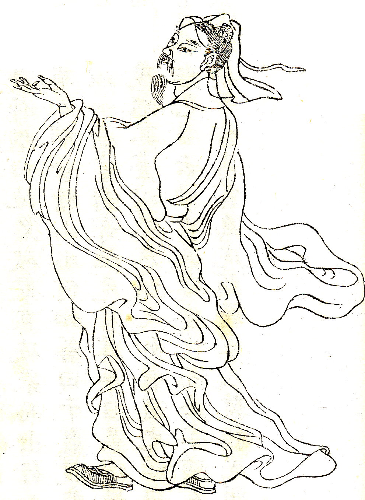
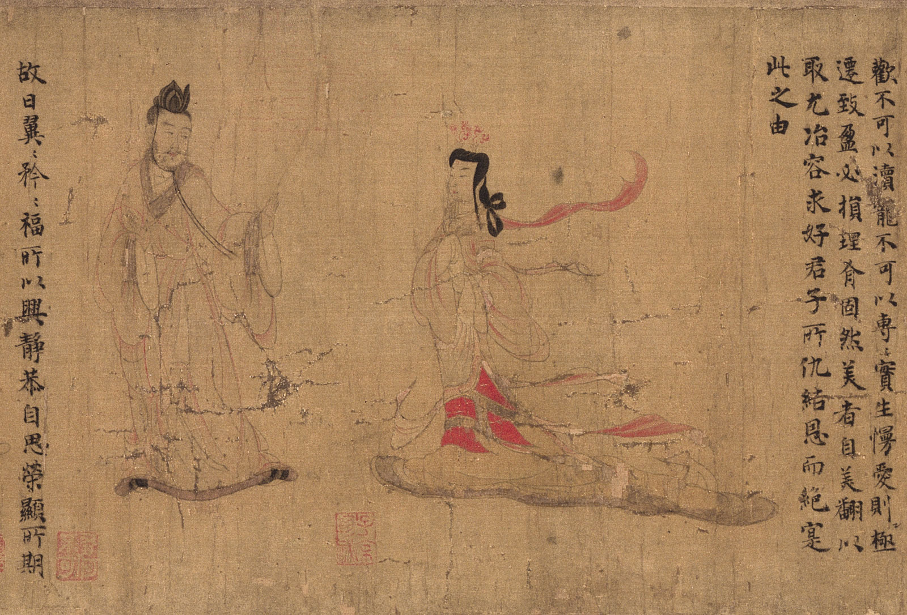
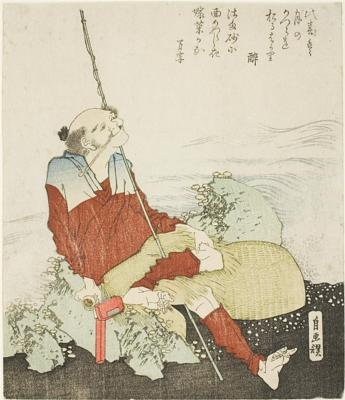
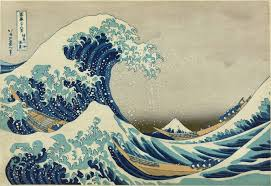

|  | Gu KaizhiGu Kaizhi (345 A.D-406 A.D.) was a Chinese painter, poet and politician. He often painted portraits. |
 |
|  | HokusaiHokusai (1760-1849) was a Japanese painter and printmaker. His most famous painting is The Great Wave Off Kanagawa. |
 |